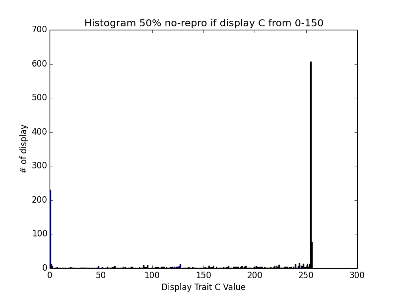
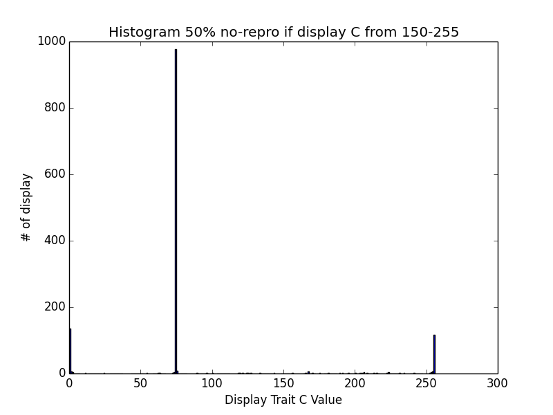

Ok, so It's Monday. :/ Going to have a meeting with Charles in a minute. Finished up the first big push on dist_qsub. It does what I want, mostly, I think.
Write own organism with own mate selection options, run them with mate selection options.
Make deadly ranges. two separate runs with different deadly ranges.
Added the config options. Running the deadly ranges runs. Range 1 (0-150) 50% no-reproduce.
TODO
- add more crossover points, to make mating with the wrong type more disruptive.
- Stickleback dude feedback: display ratio of matings OTW vs total in population.
Ok, so I've managed to write a little script to take the pre-counted display_c values and print out a histogram. I ended up using the bar function rather than hist because hist expects your raw data, and pre-bins it for you. This isn't useful for me.
These are 50% deadly from display trait C 0-150.
rosiec@Weir:~/Dropbox/School_Docs/Research/AvidaDev/avida_dev_sexual_selection_testing/deadly_range/$ ./avida -set ENVIRONMENT_FILE environment_braidedresources.cfg -set MODULE_NUM 10 -set DISPLAY_C_DEADLY_RANGE_BEGIN 0 -set DISPLAY_C_DEADLY_RANGE_BEGIN 150 -set DATA_DIR data__wide0-150deadly_10ptCO_braided2 rosiec@Weir:~/Dropbox/School_Docs/Research/AvidaDev/avida_dev_sexual_selection_testing/deadly_range/data__wide0-150deadly_10ptCO_braided2$ tail -1 mating_display_c_histogram-50000.dat | cut -d " " -f 6- > choosy_female_only-50000.dat rosiec@Weir:~/Dropbox/School_Docs/Research/AvidaDev/avida_dev_sexual_selection_testing/deadly_range/data__wide0-150deadly_10ptCO_braided2$ python ~/Dropbox/School_Docs/Research/research_scripts/graph_generation/histogram_from_csv.py -t "Histogram 50% no-repro if display C from 0-150" -x "Display Trait C Value" -y "# of display" -s " " deadly0-150choosy_female_only-50000.png choosy_female_only-50000.dat
The directory is misnamed. These are deadly from 150-255.
rosiec@Weir:~/Dropbox/School_Docs/Research/AvidaDev/avida_dev_sexual_selection_testing/deadly_range/$ ./avida -set ENVIRONMENT_FILE environment_braidedresources.cfg -set MODULE_NUM 10 -set DISPLAY_C_DEADLY_RANGE_BEGIN 150 -set DISPLAY_C_DEADLY_RANGE_BEGIN 255 -set DATA_DIR data__wide0-150deadly_10ptCO_braided3 rosiec@Weir:~/Dropbox/School_Docs/Research/AvidaDev/avida_dev_sexual_selection_testing/deadly_range/data__wide0-150deadly_10ptCO_braided3$ tail -1 mating_display_c_histogram-50000.dat | cut -d " " -f 6- > choosy_female_only-50000.dat rosiec@Weir:~/Dropbox/School_Docs/Research/AvidaDev/avida_dev_sexual_selection_testing/deadly_range/data__wide0-150deadly_10ptCO_braided3$ python ~/Dropbox/School_Docs/Research/research_scripts/graph_generation/histogram_from_csv.py -t "Histogram 50% no-repro if display C from 150-255" -x "Display Trait C Value" -y "# of display" -s " " deadly150-255choosy_female_only-50000.png choosy_female_only-50000.dat

Aaaand they look identical. SOMETHING IS WRONG.
Oh, christ. I was defining ..._BEGIN twice. Oops. So, this is what it looks like when there's nothing special happening. I can use them as controls. Heh.